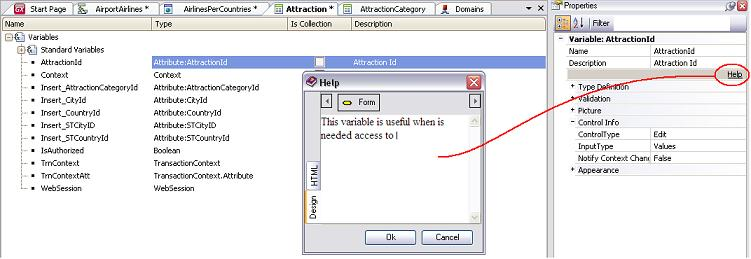

To allow adding HTML help to attributes, variables or domains when defining them (or later). For this, there are options to edit the HTML format in their definition dialog. You can access this through the Help link from the properties window. 
|
| Backlinks | |
| Category:Attribute definition | Attributes and Domains Help and Documentation edition |